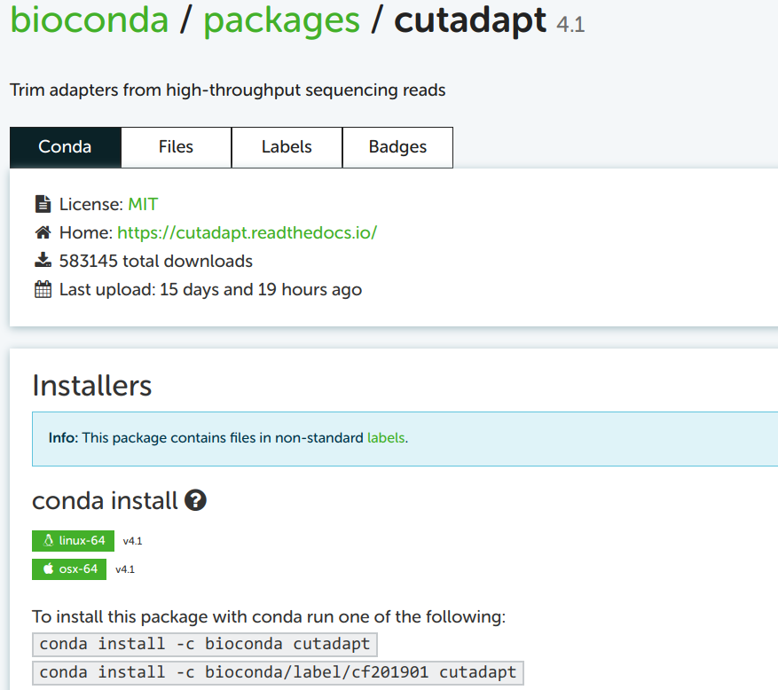
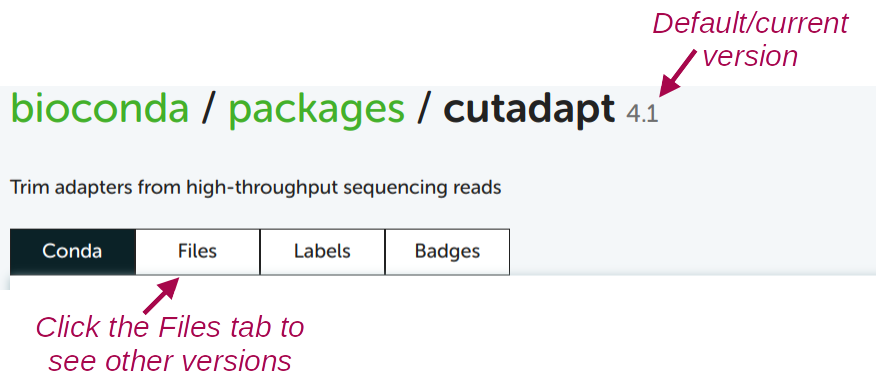

Software: Conda
Week 6 - at-home reading
1 Conda basics
Conda can create so-called environments in which you can install one or more software packages.
As you’ll learn below, as long as a program is available in one of the online Conda repositories (and this is nearly always the case for open-source bioinformatics programs), then installing it:
- Is quite straightforward;
- Is done with a procedure that is nearly identical regardless of the program you are installing;
- Doesn’t require admin privileges.
A Conda environment is “merely” a directory that includes the executable (binary) files for the program(s) in question. I have a collection of Conda environments that anyone can use, and you can see a list of these environments as follows:
ls /fs/ess/PAS0471/jelmer/condaagat cactus fastqc mbarq parsnp racon smap-4.6.5
alv cgmlst fastq-dl medaka perl ragtag-2.1.0 smartdenovo-env
amber chopper feba metabat2 phylofisher rascaf snippy-4.6.0
amrfinderplus cialign filtlong metaphlan picard ratatosk snpeff
antismash clinker flye metawrap pilon-1.24 rcorrector-1.0.5 sortmerna-env
aswcli clipkit gcta minibusco pirnn repeatmasker sourmash
bactopia3 clonalframeml geofetch mitofinder pkgs repeatmodeler spades
bakta cogclassifier gffread mitohifi plasmidfinder-2.1.6 resfinder sra-tools
base compleasm gget mlst plink2 rnaquast-2.2.1 star
bbmap curl gubbins mlst-cge plottree roary-3.13 subread
bcftools cutadapt hclust2 mlst_check pmprimer r-rnaseq taxonkit
bedops deeploc hisat2 mobsuite pod5 r_tree tgsgapcloser
bedtools deeptmhmm hmmer multiqc porechop sabre-1.0 tiara
bioawk diamond humann mummer4 prokka salmon transdecoder-5.5.0
bioconvert dorado inspector muscle protrac samtools treetime
bit dwgsim interproscan-5.55 nanoplot pseudofinder scoary trimgalore
blast eggnogmapper iqtree ncbi-datasets purge_dups-1.2.6 seqkit trimmomatic-0.39
bowtie1 emboss kofamscan nextdenovo-env pycoqc seqtk unicycler
bowtie2 emu kraken2 nextflow qiime2-amplicon-2024.10 shellcheck vcftools
bracken entrez-direct kraken-biom nextflow-24.10.6 qualimap-env shoot virema
busco evigene krona orthofinder quarto signalp-6.0 virsorter
bwa fast5tofastq lissero orthofisher quast skim2mito virulencefinder
cabana fastp mafft panaroo quickmerge-env smap vsearchThis is organized similarly to the Lmod modules in that there’s generally one separate environment for one program, and the environment is named after that program.
1.1 Activating Conda environments
Before you can activate Conda environments, you always need to load OSC’s Miniconda module first, and we will load the most recent one:
module load miniconda3/24.1.2-py310As mentioned above, these environments are (de)activated much like with the Lmod system. But while the term “load” is used for Lmod modules, the term “activate” is used for Conda environments — it means the same thing.
Also like Lmod, there is a main command (conda) and several sub-commands (deactivate, create, install, update). For example, to activate an environment:
conda activate /fs/ess/PAS0471/jelmer/conda/multiqc(/fs/ess/PAS0471/jelmer/conda/multiqc) [jelmer@p0085 jelmer]$When you have an active Conda environment, its name is displayed in front of your prompt, as depicted above with (multiqc).
Because the MultiQC environment you just loaded is not your own, the full path to the environment is shown (making the prompt rather long…). But when you load your own environment, only the name will be shown, like so:
(multiqc) [jelmer@p0085 jelmer]$After you have activated the MultiQC environment, you should be able to use the program. To test this, simply run the multiqc command with the --help option:
multiqc --help /// MultiQC 🔍 | v1.17
Usage: multiqc [OPTIONS] [ANALYSIS DIRECTORY]
MultiQC aggregates results from bioinformatics analyses across many samples into a
single report.
[...output truncated...]Unlike Lmod / module load, Conda will by default only keep a single environment active. Therefore, when you have one environment activate and then activate another. For example, after activating the TrimGalore environment, the MultiQC environment is no longer active:
conda activate /fs/ess/PAS0471/jelmer/conda/trimgalore
multiqc --helpbash: multiqc: command not found...--stack option does enable you having multiple Conda environments active (Click to expand)
Activate the TrimGalore environment, if it isn’t already active:
conda activate /fs/ess/PAS0471/jelmer/conda/trimgalore“Stack” the MultiQC environment:
conda activate --stack /fs/ess/PAS0471/jelmer/conda/multiqcCheck that you can use both programs — output not shown, but both should successfully print help info:
multiqc --help trim_galore --help
1.2 Lines to add to your shell script
Like for Lmod modules, you’ll have to load Conda environments in every shell session that you want to use them — they don’t automatically reload.
Conda environments loaded in your interactive shell environment do “carry over” to the environment in which your script runs (even when you submit them to the Slurm queue with sbatch). However, it is good practice to always include the necessary code to load/activate programs in your shell scripts:
#!/bin/bash
set -euo pipefail
# Load software
module load miniconda3/24.1.2-py310
conda activate /fs/ess/PAS0471/jelmer/conda/multiqcProblems can occur when you have a Conda environment active in your interactive shell while you submit a script as a batch job that activates a different environment. Therefore, it is generally a good idea not to have any Conda environments active in your interactive shell when submitting batch jobs1. To deactivate the currently active Conda environment, simply type conda deactivate without any arguments:
conda deactivate 2 Creating your own Conda environments
2.1 One-time Conda configuration
Before you can create our own environments, you first have to do some one-time configuration2. The configuration will set the Conda “channels” (basically, software repositories) that we want to use when we install programs, including the relative priorities among channels (since one program may be available from multiple channels).
We can do this configuration with the config sub-command — run the following in your shell:
conda config --add channels defaults # Added first => lowest priority
conda config --add channels bioconda
conda config --add channels conda-forge # Added last => highest priorityLet’s check whether the configuration was successfully saved:
conda config --get channels--add channels 'defaults' # lowest priority
--add channels 'bioconda'
--add channels 'conda-forge' # highest priority2.2 Example: Creating an environment for TrimGalore
We will now create a Conda environment with the program TrimGalore installed, which you used in last week’s exercises, and which does not have a system-wide installation at OSC. Here is the command to all at once create a new Conda environment and install TrimGalore into that environment:
# [Don't run this - we'll modify this a bit below]
conda create -y -n trim-galore -c bioconda trim-galoreLet’s break that command down:
createis the Conda sub-command to create a new environment.- When adding
-y, Conda will not ask us for confirmation to install. - Following the
-noption, you can specify the name you would like the environment to have: we usedtrim-galore. You can use whatever name you like for the environment, but a descriptive yet concise name is a good idea. For single-program environments, it makes sense to simply name it after the program. - The
-coption is to specify a “channel” (repository) from which to install, herebioconda3. - The
trim-galoreargument at the end of the line simply tells Conda to install the package of that name.
By default, Conda will install the latest available version of a program. If you create an entirely new environment for a program, like we’re doing here, that default should always apply — but if you’re installing into an environment that already contains programs, it’s possible that due to compatibility issues, it will install a different version.
If you want to be explicit about the version you want to install, add the version number after = following the package name, and you may then also want to include that version number in the Conda environment’s name — try this:
conda create -y -n trim-galore-0.6.10 -c bioconda trim-galore=0.6.10Collecting package metadata (current_repodata.json): done
Solving environment: done
# [...truncated...]There should be a lot of output, with many packages that are being downloaded (these are all “dependencies” of TrimGalore), but if it works, you should see this before you get your prompt back:
Downloading and Extracting Packages
Preparing transaction: done
Verifying transaction: done
Executing transaction: done
#
# To activate this environment, use
#
# $ conda activate trim-galore-0.6.10
#
# To deactivate an active environment, use
#
# $ conda deactivateNow, you should be able to activate the environment (using just its name – see the box below):
conda activate trim-galore-0.6.10 Let’s test if we can run TrimGalore — note, the command is trim_galore:
trim_galore --help USAGE:
trim_galore [options] <filename(s)>
-h/--help Print this help message and exits.
# [...truncated...]You may have noticed above that we merely gave the environment a name (trim-galore or trim-galore-0.6.10), and did not tell it where to put this environment. Similarly, we were able to activate the environment with just its name. Conda assigns a personal default directory for its environments, somewhere in your Home directory.
You can install environments in a different location with the -p (instead of -n) option — for example:
# [Don't run this]
conda create -y -p /fs/scratch/PAS2880/$USER/conda/trim-galore -c bioconda trim-galoreAnd when you want to load someone else’s Conda environments, you’ll always have to specify the full path to environment’s dir, like you did when loading one of my Conda environments above.
2.3 Finding Conda installation info online
Minor variations on the conda create command above can be used to install almost any program for which a Conda package is available, which is the vast majority of open-source bioinformatics programs!
However, you may wonder how you would know:
- Whether the program is available and what the name of its Conda package is
- Which Conda channel we should use
- Which versions are available
To find this out, my strategy is to simply Google the program name together with “conda”, e.g. “cutadapt conda” if I wanted to install the Cutadapt program. Let’s see that in action:

Click on that first link (in my experience, it is always the first Google hit):

2.4 Building the installation command from the online info
You can take the top of the two example installation commands as a template, here: conda install -c bioconda cutadapt. You may notice the install subcommand, which we haven’t yet seen. This would install Cutadapt into the currently activated Conda environment. Since our strategy here is to create a separate environment for each program, just installing a program into whatever environment is currently active is not a great idea.
You can use the install command with a new environment, but then you would first have to create an “empty” environment, and then run the install command. However, we saw above that we can do all of this in a single command. To build this create-plus-install command, all we need to do is replace install in the example command on the Conda website by create -y -n <env-name>. Then, our full command (without version specification) will be:
# [Don't run this - example command]
conda create -y -n cutadapt -c bioconda cutadaptTo see which version of the software will be installed by default, and to see which older versions are available:

For almost any other program, you can use the exact same procedure to find the Conda package and install it!
Remove an environment entirely:
conda env remove -n cutadaptList all your conda environments:
conda env listList all packages (programs) installed in an environment — due to dependencies, this can be a long list, even if you only actively installed one program:
conda list -p /fs/ess/PAS0471/jelmer/conda/multiqcExport a plain-text “YAML” file that contains the instructions to recreate your currently-active environment (useful for reproducibility!)
conda env export > my_env.ymlAnd you can use the following to create a Conda environment from such a YAML file:
conda env create -n my_env --force --file my_env.yml
2.5 Organizing your Conda environments
There are two reasonable alternative way to organize your Conda environments:
- Have one environment per program (my preference)
- Easier to keep an overview of what you have installed
- No need to reinstall the same program across different projects
- Less risk of running into problems with your environment due to mutually incompatible software and complicated dependency situations
- Have one environment per research project
- You just need to activate that one environment when you’re working on your project.
- Easier when you need to share your entire project with someone else (or yourself) on a different (super)computer.
Even though it might seem easier, a third alternative, to simply install all programs across all projects in one single environment, is not recommended. This doesn’t benefit reproducibility, and your environment is likely to stop functioning properly sooner or later.
Footnotes
Unless you first deactivate any active environments in your script.↩︎
That is, these settings will be saved somewhere in your OSC home directory, and you never have to set them again unless you need to make changes.↩︎
Given that you’ve done some config above, this is not always necessary, but it can be good to be explicit.↩︎